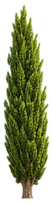

Il pioppo è verticale: si innalza, veglia, si collega al cielo.

Segno dell'acqua, della vita.


Viviamo in un mondo che corre troppo. A volte, per finire quel libro, preparare un grande progetto, studiare senza interruzioni o semplicemente ritrovare noi stessi, ci servono solo tempo e silenzio.
L'associazione Amics de la Natura apre le porte di un luogo pensato per la concentrazione e il benessere in piena natura. Cinque appartamenti indipendenti e accoglienti (uno dei quali completamente accessibile) nel paesaggio tranquillo dell'Horta de Lleida, dove la luce di ponente e il ritmo della terra segnano il tempo.
Che tu sia un artista in cerca di ispirazione, che stia studiando per gli esami, scrivendo le prime pagine di una storia o che abbia semplicemente bisogno di qualche giorno di calma e di stacco, questo è il tuo posto.
Un luogo per riposare. Un respiro per la mente. Un luogo dove la natura ti fa compagnia.

Come sulle antiche strade medievali, i cipressi segnano il benvenuto a Les Vaqueres. Tre insieme all'arrivo e un quarto un po' più in là, altrettanto alto, a rafforzare l'antico simbolo di accoglienza e ospitalità: la promessa di un tetto tranquillo, di un piatto a tavola e di un riparo sicuro per il viaggio.
Più in alto si erge il nostro Pioppo saggio: non il più alto, ma il più grande e il più vecchio della Catalogna, misurato al tronco a un metro e trentacinque da terra, come ha confermato lo stesso Martí Boada. È il patriarca dell'Horta, la sentinella silenziosa e saggia che custodisce la pace di questo luogo.
Al riparo della casa ci aspetta il fico centenario. Se il pioppo protegge con la sua grandezza e la sua memoria, il fico accoglie da vicino: con la sua lunga panca e la porta aperta sulla cucina comune, offre l'ombra intima in cui le conversazioni scorrono e il tempo si ferma.
Il pioppo e il fico sono due atteggiamenti verso il mondo che si completano a vicenda.
Il pioppo è verticale: si innalza, veglia, si collega al cielo.

Segno dell'acqua, della vita.
Il fico è orizzontale: apre le braccia, fa ombra, invita a sedersi.

Simbolo di fertilità, abbondanza e saggezza.
C'è una continuità.
Si completano a vicenda. È quasi una storia.